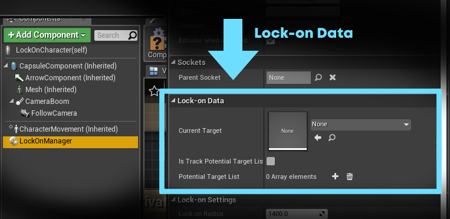
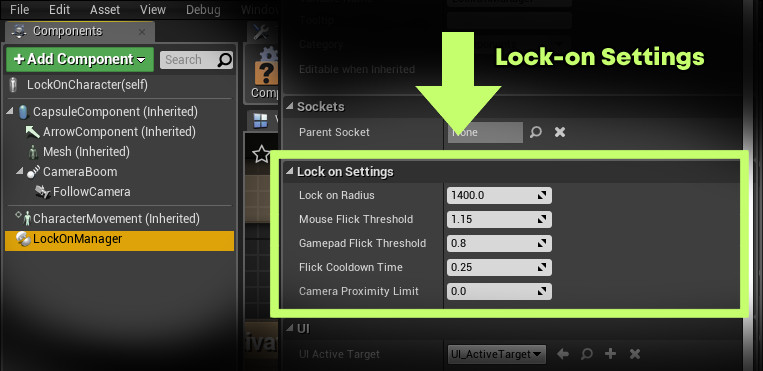
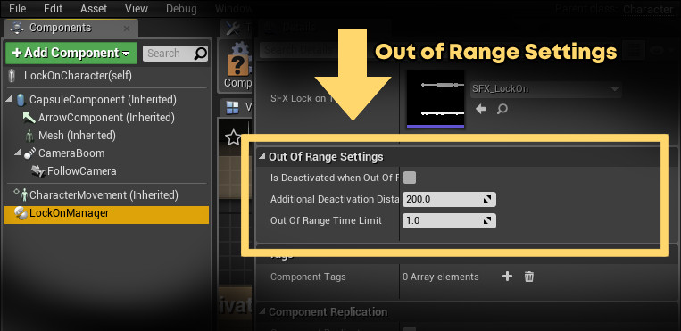
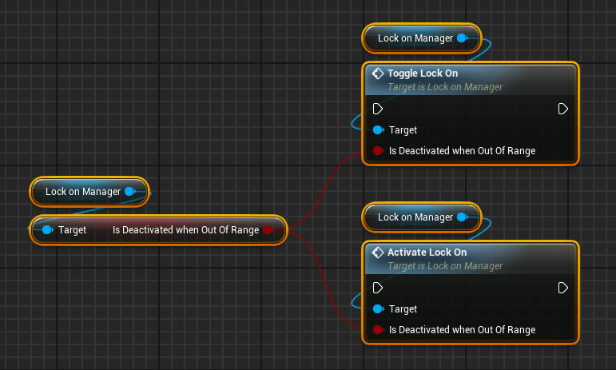

Lock-on 360 - Advanced Settings and Usage
Lock-on Data

Getting the currently active target
To get the currently active lock-on target, you can use either the CurrentTarget variable of the LockOnManager, or the GetCurrentTarget function.
This will give you the target that is currently being locked inside the UI crosshair.
Getting the list of all potential targets
To get the list of all the potential targets that is currently available on screen, use the PotentialTargetList variable.
This list will return all the potential targets on screen, but will not include the currently active lock-on target.
Do note that you will need to set IsTrackPotentialTargetList to true to ensure the list is valid.
If IsTrackPotentialTargetList is set to false, PotentialTargetList will not be updated and will always be empty.
Lock-on Settings
The lock-on settings can be customized from the Details tab of the LockOnManager component.
Detailed explanation for each property can be found below.

-
Lock-on Radius
Determines the maximum distance/range of the lock-on detection.
Any target whose distance to the character is within this lock-on radius and is visible on the screen will be seen as a potential target.Distance unit is in centimeters.
-
Mouse Flick Threshold
Determines the sensitivity of how far should the mouse be moved in quick succession before the system registers it as a flick.
The lower the value, the more sensitive the target switching will be.
Since even a tiny movement can be easily registered as a flick.While the higher the value, the less sensitive it will be.
Since more distance will be required for the movement to be registered as a flick.Setting the value to 0 will not do anything, since 0 will not be processed as a valid input.
-
Gamepad Flick Threshold
Determines the sensitivity of how far should the gamepad thumbstick be moved in quick succession before the system registers it as a flick.
The lower the value, the more sensitive the target switching will be.
Since even a tiny movement can be easily registered as a flick.While the higher the value, the less sensitive it will be.
Since more distance will be required for the movement to be registered as a flick.Setting the value to 0 will not do anything, 0 will not be processed as a valid input.
-
Flick Cooldown Time
This value determines a cooldown time before another flick can be registered after a previous one have been performed.
This affects both how fast a flick is processed, as well as how long would the lock-on system stay on a target before it can move to another one.The time unit is in seconds.
If this value is set to low, the lock-on might feel a little wild since the switching will be rather rapid.
If this value is set to high, it might take too long for the system to perform a switch to another target.Please adjust this value accordingly depending on your requirements.
-
Camera Proximity Limit
This value determines the minimum distance of how close the camera should be towards the target.
The distance unit is in centimeters.The limit will be respected as long as there is no visible obstacle between the target and the camera.
If an obstacle is found, the camera might be placed much closer to the target than the expected proximity limit.
Out of Range Settings
The out of range deactivation settings can be found on the Details tab of the LockOnManager component.
Detailed explanation for each property can be found below.

-
Is Deactivated When Out Of Range
This boolean value determines whether the Lock-on system will automatically deactivate itself or not when the target is out of range.
The value is registered once at the start of the runtime, and overwritten whenever ToggleLockOn or ActivateLockOn is called.
If you want to preserve your last setting, make sure to use this value as an input to the IsDeactivatedWhenOutOfRange parameter to both of those functions
-
Additional Deactivation Distance
This is an optional value that modifies how far the deactivation/out of range distance is relative to the LockOnRadius value.
Distance unit is in centimeters.Positive value means additional distance, negative value means a decrease in distance.
-
Out Of Range Time Limit
This determines how long should a target remains locked on to the system once its distance falls out of range.
Time unit is in seconds.Set this value to 0 if you want the system to immediately lose the target without delay.